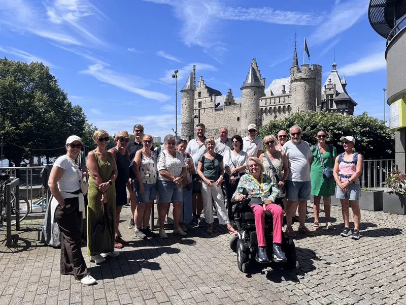

À propos de Marie-Hélène
Voir davantage commence par un autre regard
Une visite avec Marie-Hélène relie les lieux et leurs histoires sans jamais devenir un cours. Vous recevez le contexte, découvrez des détails inattendus et disposez de tout l’espace nécessaire pour poser vos questions.
Pas une suite de faits, mais une histoire qui reste en mémoire
Une expertise professionnelle
Guide urbaine diplôméeCVO Vitant · formation reconnue par Toerisme Vlaanderen
Guide de muséeGuide officielle au M HKA
Trois languesNéerlandais, français et anglais
Des publics variésÉcoles, familles, associations, entreprises et groupes privés

Partir ensemble
Vivez Anvers à votre manière
Choisissez une visite existante ou laissez Marie-Hélène adapter une promenade à vos intérêts, à l’occasion et à votre rythme.